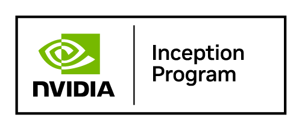

TorrideX: plasma-assisted thermionic conversion
TorrideX is the R&D program of Kulicage Dynamics, the company I founded in 2024. It investigates turning heat directly into DC electricity, with no moving parts, for compact long-duration power.
- Role
- Founder, program lead
- Stage
- Modeling and numerical verification
- Tools
- COMSOL, Python, NVIDIA Warp, SolidWorks, Inventor
How it works
A heated emitter releases electrons that cross a narrow gap to a cooler collector, producing DC power directly from heat. A low-pressure plasma in the gap supports electron transport by neutralizing space charge, the effect that otherwise limits current.
What I do on the program
- Build thermal, electrostatic and particle-transport models and test where their assumptions stop holding.
- Verify numerical results against analytical reference solutions, with grid-convergence and conservation checks.
- Cross-check CPU and GPU implementations, including an NVIDIA Warp benchmark.
- Turn verified models into the mechanical and thermal design of prototype hardware.
Where it stands
The program is in modeling and numerical verification. The next milestone is a controlled, electrically heated, non-radioactive bench experiment.
Geometry, materials and design details are shared under NDA or in formal partner discussions.

Kulicage Dynamics LLC / TorrideX is a member of the NVIDIA Inception program.
Membership supports the simulation-first workflow, including GPU-accelerated modeling.